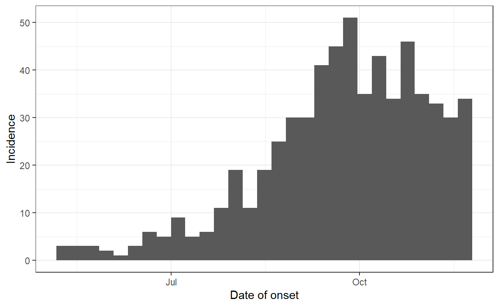
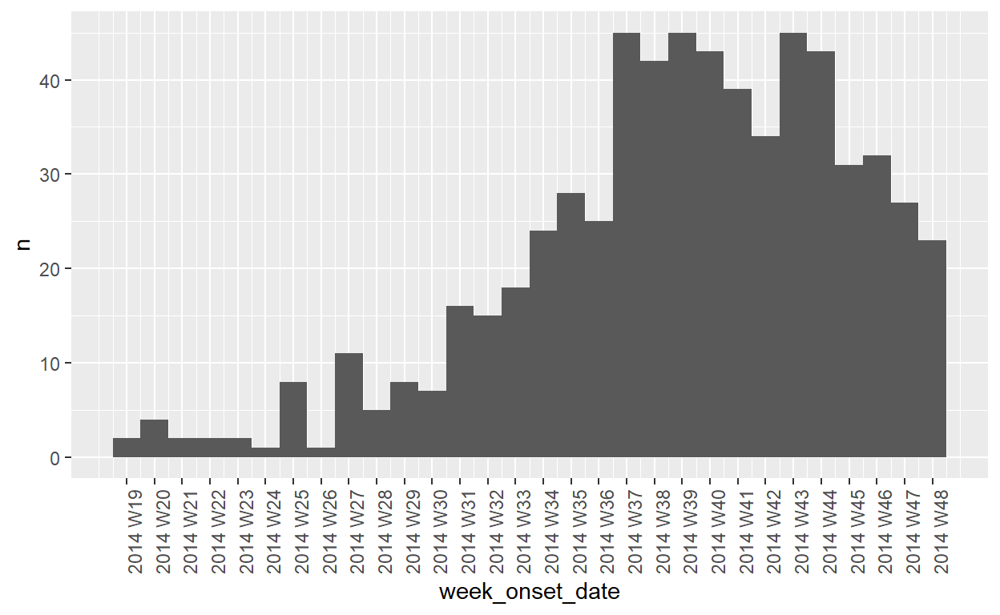
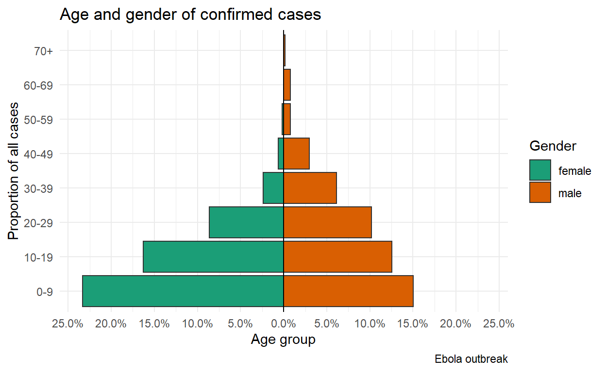

Introduction to R for Applied Epidemiology and Public Health
Welcome
Welcome to the live course “Introduction to R for applied epidemiologists”, offered by Applied Epi - a nonprofit organisation that offers open-source tools, training, and support to frontline public health practitioners.

Heat plots, epidemic curves, and pyramids
This exercise focuses on learning how to code and customize more advanced plots such as heat plots, epidemic curves and age/sex demographic pyramids. We will be building on what you have learned previously from tidyverse and ggplot2 to produce these.
This will involve using previously explored aspects such as:
ggplot()
- Pipe chains
%>%
- Themes (e.g.
theme_minimal(),theme_bw())
- Custom axis scales (e.g.
scale_y_continuous())
- New functions such as
geom_tile()for heat plots andgeom_histogram()for epidemic curves, andage_pyramid()(from {apyramid}) for age/sex pyramids
Format
This exercise will guide you through a set of tasks.
You should perform these tasks in RStudio and on your local
computer.
Getting Help
There are several ways to get help:
- Look for the “helpers” (see below)
- Ask your live course instructor/facilitator for help
- Ask a colleague or other participant in the course for tips
- Post a question in Applied Epi Community in the category for questions about Applied Epi Training
Here is what those “helpers” will look like:
Click to read a hint
Here you will see a helpful hint!
Click to see a solution (try it yourself first!)
linelist %>%
filter(
age > 25,
district == "Bolo"
)Here is more explanation about why the solution works.
Quiz questions
Please complete the quiz questions that you encounter throughout the tutorial. Answering will help you to comprehend the material, and will also help us to improve the exercises for future students.
To practice, please answer the following questions:
Icons
You will see these icons throughout the exercises:
| Icon | Meaning |
|---|---|
| Observe | |
| Alert! | |
| An informative note | |
| Time for you to code! | |
| Change to another window | |
| Remember this for later |
Learning objectives
In this exercise you will:
- Practice reading R documentation for functions
- Learn to make heat plots
- Learn to make epidemic curves
- Learn to make age/sex pyramids
Refresh your memory
First, let us refresh ourselves on the basics of ggplot2!
Great, now we have refreshed our memory with a quiz, we will start on our first topic, heat plots.
Preparation
Open your R project and run your entire “ebola_analysis.R” script, so
that you are able to use the data frame combined.
This will involve running all the parts of your R script, including
to import data, clean, perform joins, and create the
combined dataset.
If you did not complete the joining exercise, or are seeing errors
when trying to run your script, you can import a “backup”
combined data frame in the “data/clean/backup/” folder
using this command:
combined <- import(here("data", "clean", "backup", "linelist_combined_20141201.rds"))Epiweeks
Before we proceed, it is worth covering the creation of “weeks”, or
“epiweeks” (epidemiological weeks) in your data frame. You may want to
create a new column that contains the “epiweek”, based on a date such as
date_onset, in order to create tables of the number of
cases by week.
There are many different ways to define what a “week” is. Likewise, some countries formulate epiweeks differently (e.g. starting on Sundays, Mondays, or Fridays). Most of the world uses weeks that begin on Mondays. There are several ways to do this in R. Below we present the most common approach in detail, and provide you with a reference sheet for the rest.
tsibble
The method that we recommend for creating epidemic weeks (based on a certain day of the week) is with the {tsibble} package. This package is often used for time series analysis, and has a variety of useful time/date functions.
Load/install {tsibble}
Add the {tsibble} package to your p_load()
command at the top of your script, and re-run the command to install and
load {tsibble} from CRAN.
Create epiweek columns
The function yearweek() conveniently produces weeks from
a provided date column (e.g. date_onset in the
combined data frame). You can also designate the
week_start = argument, where 1 is for Monday, 7 is for
Sunday, etc.
Putting this in a mutate() command will create a new
column week_onset of class “yearweek”, which will display
values like “2014 W44”. Importantly, these can be used to bin the rows
into discrete weeks for an epidemic curve or another table/plot.
# create new column for week of onset
mutate(week_onset = yearweek(date_onset, week_start = 1)) %>% The values of week_onset will look like this:
## <yearweek[6]>
## [1] "2014 W44" "2014 W33" "2014 W35" "2014 W43" "2014 W44" "2014 W41"
## # Week starts on: MondayWe can then create a second column based on this weeks column, that will be a normal date class. We can use this column for adjusting date axis label displays (we will do this in the epicurves section of this exercise).
We do this by using the new column week_onset (class
“yearweek”) and wrapping it in the {base} function
as.Date(). The “weeks” will be converted to dates. If you
selected a week_start = 1 (Mondays), then the date returned
would be the Monday of that week (rounding down). We save this as a new
column, week_onset_date.
# create new column for week of onset
mutate(week_onset_date = as.Date(week_onset)) %>% The values of week_onset_date will look like this:
## [1] "2014-10-27" "2014-08-11" "2014-08-25" "2014-10-20" "2014-10-27"
## [6] "2014-10-06"For now, add the below mutate() command just
after the joining section of your script, before combined
is exported as a .rds file. Later, you may choose to integrate
these commands into the cleaning pipe chain of the surveillance dataset
instead.
mutate() actually allows us to place more than one
statement within its parentheses, separated by commas. So we take
advantage of this to add both changes within the same
mutate() command.
combined <- combined %>%
mutate(week_onset = yearweek(date_onset, week_start = 1), ## create week of onset variable
week_onset_date = as.Date(week_onset)) ## create a date version Now we have two versions of “epiweek” columns that we can use to make plots and tables!
Heat plots
Heat plots, also called “heat tiles”, are useful visualizations when trying to display 3 variables (x-axis, y-axis and fill).
For instance, you may want to look at a breakdown of how many cases were reported by week across several hospitals, to get an idea of how the epidemic has progressed in several places. Let’s see how this works.
Let’s say that we have a data frame called
hospital_weeks, which has the following columns:
head(hospital_weeks) # print the first 6 rowsThis data is in “long” format, and every possible hospital-week has a row.
Create this data frame in your RStudio using this code below. Do
not try to understand this code (try our advanced course in data
management). In essence it uses count() to create a
data frame of case counts by week, then creates a data frame with all
possible hospital-weeks, and then joins them together.
# count cases by hospital-week
hospital_weeks_raw <- combined %>%
count(hospital, week_onset_date)
# create longer dataset of all possible hospital-weeks
expanded <- hospital_weeks_raw %>%
select(hospital, week_onset_date) %>%
tidyr::expand(., week_onset_date, hospital)
# merge so that all hospital-weeks are represented in the data
hospital_weeks <- hospital_weeks_raw %>%
right_join(expanded) %>%
mutate(n = replace_na(n, 0)) %>%
filter(week_onset_date >= ymd("2014-06-15"))Review documentation
Take a few minutes to review the documentation for the function
geom_tile(), which is from {ggplot2}. You can access this
by either:
- Entering
?geom_tilein the Console, or
- Click to the “Help” pane (lower-right) and entering
geom_tilein the search bar
Basic heat plot
What ggplot() code would you write to create a heat plot
that:
- Has the week of onset on the x-axis
- Has the hospital name on the y-axis
- Is colored by the number of onsets in that week?
Click to see a solution (try it yourself first!)
ggplot(data = hospital_weeks,
mapping = aes(x = week_onset_date, y = hospital, fill = n)) +
geom_tile()Customising your heat plot
The plot is nice, but let us do a dew more things to refine the presentation:
- Modify
hospital_weeksto create a new data frame:hospital_weeks_adjusted. In this data frame, ensure that:
- The
NAvalues in the columnhospitalare re-coded as “Missing” and this column is class “factor” with the levels in this order : “Central Hospital”, “Military Hospital”, “Port Hospital”, “SMMH”, “Other”, “Missing”.
- You can convert
NAto “(Missing)” usingfct_explicit_na()from {forcats} withinmutate()
- You can then use
fct_relevel()also from {forcats}, in a subsequentmutate()to list the desired factor level order
Click to read a hint
Within mutate() commands, use the {forcats} package and
its function fct_explicit_na() to re-define the column
hospital to convert NA to “(Missing)” (this
also converts the column to class “factor”). In another mutate command,
use the function fct_relevel() to adjust the ordering of
the levels.
If you need a refresher on how to change NA values in
factor columns, and how to reorder, checkout the R Handbook chapter on
factors.
Click to see a solution (try it yourself first!)
hospital_weeks_adjusted <- hospital_weeks %>%
mutate(hospital = fct_explicit_na(hospital),
hospital = fct_relevel(hospital, "Central Hospital", "Military Hospital", "Port Hospital", "SMMH", "Other", "(Missing)"))- In the ggplot on the new adjusted data frame, change the color scheme to a diverging color scale. Provide a scale one that extends from “skyblue” at low values to “tomato” at high values.
Click to read a hint
Add scale_fill_gradient() to the ggplot()
command. See the help documentation with
?scale_fill_gradient to understand the arguments.
Click to see a solution (try it yourself first!)
ggplot(data = hospital_weeks_adjusted,
mapping = aes(x = week_onset_date, y = hospital, fill = n)) +
geom_tile()+
scale_fill_gradient(low = "skyblue", high = "tomato")- The default x-axis ticks show each month. Change these to
efficiently show every two weeks (not show any duplicate information).
- Think about using the
date_label_short()function from {scales}, which you learned in the scales ggplot module.
- Think about using the
Click to read a hint
Add scale_x_date() to the bottom of the ggplot, and
provide the arguments date_breaks = "2 weeks" (for
example), and labels = scales::label_date_short().
Click to see a solution (try it yourself first!)
ggplot(data = hospital_weeks_adjusted,
mapping = aes(x = week_onset_date, y = hospital, fill = n)) +
geom_tile()+
scale_fill_gradient(low = "skyblue", high = "tomato")+
scale_x_date(
date_breaks = "2 weeks",
labels = scales::label_date_short()
)- Make the labels for the axes and legend more presentable.
Click to read a hint
Adjust the labs(). Recall that the legend title in this
case is edited with fill = because it was created by the
fill.
Below is all the solution code together:
Click to see a solution (try it yourself first!)
# Edit the dataset
hospital_weeks_adjusted <- hospital_weeks %>%
mutate(hospital = fct_explicit_na(hospital),
hospital = fct_relevel(hospital, "Central Hospital", "Military Hospital", "Port Hospital", "SMMH", "Other", "(Missing)"))
# Plot with adjustments
ggplot(data = hospital_weeks_adjusted) +
geom_tile(aes(x = week_onset_date, y = hospital, fill = n))+
scale_fill_gradient(low = "skyblue", high = "tomato")+
scale_x_date(date_breaks = "2 weeks",
labels = scales::label_date_short())+
labs(x = "Week of symptom onset",
y = "Hospital",
fill = "Number of\nweekly cases")+
theme_minimal()Setting up the data, creating and customising a heat plot
Note that to make the heat plot using geom_tile(), you
had to provide a data frame with counts - aggregated data (not
a linelist). There are ways to create heat plots from linelist data (see
geom_density() functions) but those will not be covered
today.
Now that you are familiar with the plotting syntax, we will move to an exercise where you create the counts data frame and further customize the plot display.
Try to do the following on your own. It will be challenging, but this is good exposure to intermediate-level R programming.
- Use
combinedto create a new data frame namedage_outcome_summary.
- First, drop any rows with
NAvalues by piping todrop_na(gender, age_cat).
- Then, use
group_by()andsummarise()to show summary counts for each unique combination (group) ofage_catandgender.
- In addition to case counts, include a column showing the number of
rows in each group whose
outcomeis equal to “Death”.
- Finally, include a column calculating with the proportion in each group equal to “Death”.
Click to see a solution (try it yourself first!)
# make new data frame summarizing age, gender, and deaths
age_outcome_summary <- combined %>%
drop_na(gender, age_cat) %>% # remove any NA values
group_by(age_cat, gender) %>% # group rows by age-gender groups
summarise( # begin creating new summary columns
n = n(),
n_death = sum(outcome == "Death", # sum the number of rows where outcome is Death
na.rm = TRUE),
pct_death = n_death / n) # create proportion dead in the group- Now, create a heat plot using this new data frame. Make the tiles be
filled (color) according to the percent of those that have an outcome of
“Death” as broken down by
genderandage_catin your data frame.
If possible, do the following as well:
- Clean up the axis names to “Age category”, “Gender” and the legend
title to
"Percent of\ncases fatal"
- Using the viridis package
(
scale_fill_viridis()) and pick a color scheme option (e.g.option = "B"), and set the scalelimits = c(0, 1)to align with the proportions.
- Add
geom_text()to display the percent on each tile. Try this first by reading the documentation forgeom_text.- To display as percents, you will need to edit
labels = scales::percent()withinaes(). Round to one decimal place withaccuracy = 0.1.
- To display as percents, you will need to edit
Click to see a solution (try it yourself first!)
# make plot
ggplot(data = age_outcome_summary, # use new data frame
mapping = aes(x = gender, # gender on x-axis
y = age_cat, # age category on y-axis
fill = pct_death)) + # fill (color) is shaded by the proportion dead
geom_tile() + # display data as tiles
scale_fill_viridis( # adjust colors scale
option = "B", # pick any option
limits = c(0, 1)) + # set the limits to go from 0 to 1
geom_text( # add text over the tiles
mapping = aes(
label = scales::percent( # show percents instead of proportions
pct_death,
accuracy = 0.1)))+
labs(x = "Gender", # add labels
y = "Age categories",
fill = "Percent of\ncases fatal") +
scale_fill_continuous( # adjust the values displayed in the legend
labels = scales::percent) # to be percents (not proportions)Ok, good job! You have managed to build summary datasets for a heat plot and then customize the plot so that you can analyze the information.
Even if you did not know how to do all of those edits to the ggplot, the purpose of that task was to expose you to a new plot and customization possibilities.
You can always find sample code in the Heat Plots chapter of the Epi R Handbook, and become more well-practiced later.
Epi curves
An epidemic curve (also known as an “epi curve”) is a core epidemiological chart typically used to visualize the temporal pattern of illness onset among a cluster or epidemic of cases.
Analysis of the epicurve can reveal temporal trends, outliers, the magnitude of the outbreak, the most likely time period of exposure, time intervals between case generations, and can even help identify the mode of transmission of an unidentified disease (e.g. point source, continuous common source, person-to-person propagation).
We are going to build epidemic curves with {ggplot2}, which allows for advanced customizability. There is another option, the {incidence2} package as described in the Epi R Handbook, which is perhaps more simple but less customizeable.
As you have been through several exercises using {ggplot2}, you are now familiar with the syntax and customization it allows (themes, labels, axes, etc).
Weeks or dates
When deciding to make an epidemic curve, you must first decide whether you want to display the “week” on the X-axis (e.g. “2014 W35”) or some variety of calendar date.
Epicurves with calendar dates
In its most basic form, plotting epidemic curves in {ggplot2} is a
case of using the ggplot function geom_histogram() to show
the distribution of the date values. However, there are 3 main things to
watch out for:
- The histogram bins (how the data are grouped by time unit)
- Scales for axes and their labels
- Themes for the plot appearance
Simple bins
Can you make a simple histogram from the data frame
combined which shows the incidence of
date_onset using 5-day intervals? The histogram “binwidth”
can be specified as a number (a static aesthetic) to
binwidth =. Also, clean up the labels and use
theme_bw().
Click to see a solution (try it yourself first!)
ggplot(data = combined, mapping = aes(x = date_onset)) +
geom_histogram(binwidth = 5) +
labs(x = "Date of onset", y = "Incidence") +
theme_bw()Defining manual bins
Calculating incidence via binwidths works if we do not care about the specific days of the week used (the bins will start at the first case), and if we do not care about months (because months can be 28, 29, 30 or 31 days!).
But as epidemiologists and public health practitioners, we usually care about the details. We typically need to produce an epidemic curve that adheres to very particular specifications. For example, cases binned by month, or by a 7-day week that starts on a particular day.
In these cases, instead of using binwidth =, we
specify breaks =.
What does breaks = expect as a value? It expects a
vector of dates to use as breaks (cut-points).
How to make a vector of dates? We know that we can create a vector
using c(), for example c(54, 22, 89) or
c("Paris", "Delhi", "Kigali").
We can even make a vector of dates:
c(ymd("2014-06-15"), ymd("2014-06-22"), ymd("2014-06-29"))
But this would be have to be a very long code to include all
the weekly break points throughout this outbreak!
Instead we can use the {base} function seq.Date() to
automatically create a sequence of dates between a
from = value, to a to = value, and in
increments specified to by =. You can specify
by values such as “day”, “week”, “month”, etc.
The sequence below uses dates of the first and last case onsets.
seq.Date(from = ymd("2014-05-06"),
to = ymd("2014-11-28"),
by = "week")## [1] "2014-05-06" "2014-05-13" "2014-05-20" "2014-05-27" "2014-06-03"
## [6] "2014-06-10" "2014-06-17" "2014-06-24" "2014-07-01" "2014-07-08"
## [11] "2014-07-15" "2014-07-22" "2014-07-29" "2014-08-05" "2014-08-12"
## [16] "2014-08-19" "2014-08-26" "2014-09-02" "2014-09-09" "2014-09-16"
## [21] "2014-09-23" "2014-09-30" "2014-10-07" "2014-10-14" "2014-10-21"
## [26] "2014-10-28" "2014-11-04" "2014-11-11" "2014-11-18" "2014-11-25"So, we could write an epicurve command like the below:
ggplot(data = combined, aes(x = date_onset))+
geom_histogram(
breaks = seq.Date(
from = ymd("2014-05-06"),
to = ymd("2014-11-28"),
by = "week")) +
labs(x = "Date of onset", y = "Incidence") +
theme_bw()
Now we are confident that the breaks are using 7-day intervals from the first case to the last case.
But typically we want the intervals to start on
Mondays (or some other day), so we add
floor_date() and it’s companion ceiling_date()
:
# Monday BEFORE the earliest case
floor_date(ymd("2014-05-06"), unit = "week", week_start = 1)## [1] "2014-05-05"# Monday AFTER the last case
ceiling_date(ymd("2014-11-28"), unit = "week", week_start = 1)## [1] "2014-12-01"And so now we can create a vector of Mondays from before the earliest case, to after the latest case.
# Sequence of Mondays from before earliest case, to after latest case
seq.Date(from = floor_date(ymd("2014-05-06"), unit = "week", week_start = 1),
to = ceiling_date(ymd("2014-11-28"), unit = "week", week_start = 1),
by = "week")## [1] "2014-05-05" "2014-05-12" "2014-05-19" "2014-05-26" "2014-06-02"
## [6] "2014-06-09" "2014-06-16" "2014-06-23" "2014-06-30" "2014-07-07"
## [11] "2014-07-14" "2014-07-21" "2014-07-28" "2014-08-04" "2014-08-11"
## [16] "2014-08-18" "2014-08-25" "2014-09-01" "2014-09-08" "2014-09-15"
## [21] "2014-09-22" "2014-09-29" "2014-10-06" "2014-10-13" "2014-10-20"
## [26] "2014-10-27" "2014-11-03" "2014-11-10" "2014-11-17" "2014-11-24"
## [31] "2014-12-01"Finally, what happens if our data are refreshed or updated with new data? Those static dates in our code will not be current!
Let’s replace them with min() and max()
applied to the column combined$date_onset.
As this is not a {dplyr} pipe, we need to specify the data frame and
column with the $ index operator. Don’t forget that these
two functions need na.rm=TRUE to remove missing values.
seq.Date(from = floor_date(min(combined$date_onset, na.rm=T), unit = "week", week_start = 1),
to = ceiling_date(max(combined$date_onset, na.rm=T), unit = "week", week_start = 1),
by = "week")## [1] "2014-05-05" "2014-05-12" "2014-05-19" "2014-05-26" "2014-06-02"
## [6] "2014-06-09" "2014-06-16" "2014-06-23" "2014-06-30" "2014-07-07"
## [11] "2014-07-14" "2014-07-21" "2014-07-28" "2014-08-04" "2014-08-11"
## [16] "2014-08-18" "2014-08-25" "2014-09-01" "2014-09-08" "2014-09-15"
## [21] "2014-09-22" "2014-09-29" "2014-10-06" "2014-10-13" "2014-10-20"
## [26] "2014-10-27" "2014-11-03" "2014-11-10" "2014-11-17" "2014-11-24"
## [31] "2014-12-01"In this way, we have made our code more dynamic. Dynamic code will be important if our dataset is refreshed/updated, so you want all the plots and tables to update automatically.
Finally, the easiest way to insert this seq.Date()
vector into the ggplot() command is by saving it in
advance, with a name. So the command becomes two separate commands:
# Define and save the vector
ebola_weeks <- seq.Date(
from = floor_date(min(combined$date_onset, na.rm=T), unit = "week", week_start = 1),
to = ceiling_date(max(combined$date_onset, na.rm=T), unit = "week", week_start = 1),
by = "week")Now if you run just ebola_weeks, the vector is
returned/printed. So we can provide ebola_weeks to the
breaks = argument of geom_histogram().
One final change before we finish is that we also add
closed = "left" to geom_histogram() which sets
the bars to also count the cases reported on the break days
themselves.
# Define and save the vector
ebola_weeks <- seq.Date(
from = floor_date(min(combined$date_onset, na.rm=T), unit = "week", week_start = 1),
to = ceiling_date(max(combined$date_onset, na.rm=T), unit = "week", week_start = 1),
by = "week")
# Run the plot, using the vector
ggplot(data = combined, aes(x = date_onset)) +
geom_histogram(breaks = ebola_weeks, closed = "left") +
labs(x = "Date of onset", y = "Incidence") +
theme_bw()Compare this plot to the histogram printed in the exercise above (7-days, no specified breaks). Do you see any small differences in how the cases have been binned? (look at the beginning of the epidemic).
The above can seem like a lot of work to just produce a list of dates! But think of the control that you have over the output. And, now that you have this code it will be easy to modify. (Also this is all in the Epi R Handbook chapter on Epidemic Curves).
Monthly epidemic curve
Now it is your turn. Copy the code and make a new epidemic curve in which the histogram bin breaks are by month from the month-start prior to the first case, until the month-start after the last case.
Once you have done this, adjust the code so that the
fill in the bars is by hospital, and the x-axis labels
appear every month.
Click to read a hint
As we want the values to be aggregated by calendar month, do the following:
Set the
unit =to “month” in the two {lubridate} functionsfloor_date()andceiling_date()and remove theweek_startarguments (check?floor_datefor details).
Change the
by =argument ofseq.Date()to “month”
Change the name of the vector
ebola_weekstoebola_months, and change it in theggplot()command too.To set the fill, put
fill = hospitalin the aesthetic mappings
To adjust the x-axis labels, do the following within
scale_x_date():- set
labels = date_label_easy()
- set
date_breaks = "months"
- set
Click to see a solution (try it yourself first!)
# define and save the vector (by month)
ebola_months <- seq.Date(
from = floor_date(min(combined$date_onset, na.rm=T), unit = "month"),
to = ceiling_date(max(combined$date_onset, na.rm=T), unit = "month"),
by = "month")
# run the plot with monthly breaks, and fill
ggplot(data = combined, aes(x = date_onset, fill = hospital)) +
geom_histogram(breaks = ebola_months, closed = "left") +
scale_x_date(
date_breaks = "months",
labels = scales::label_date_short())+
labs(x = "Date of onset", y = "Incidence") +
theme_bw()Facets
It may be difficult to read this epicurve and to understand the case trends from each hospital.
Faceting the plots means creating “small-multiple” (mini
plots) for each unique value in a column
(e.g. hospital).
You create facets by adding facet_wrap() to the ggplot.
Within this function, write a tilde ~ and then the name of the column,
for example:
facet_wrap(~gender)Now, create facets based on hospital for your
epidemic curve.
Click to see a solution (try it yourself first!)
ggplot(data = combined, aes(x = date_onset, fill = hospital)) +
geom_histogram(breaks = ebola_months, closed = "left") +
scale_x_date(
date_breaks = "months",
labels = scales::label_date_short())+
labs(x = "Date of onset", y = "Incidence") +
theme_bw()+
facet_wrap(~hospital)There are MANY other adjustments that you can make to your epidemic curve made with {ggplot2}. Many of them are outlined in the Epidemic curves chapter of the Epi R Handbook.
Week number epicurves
If you want to display “week numbers”, you can leverage the fact that
you created the column week_onset at the beginning of this
module. Still, there will be several steps:
- Create a vector of epiweek values (similar to what we created in the
previous section, but written like “2014 W35”)
- Create a second vector of date values, from the epiweek values
- Use
count()on the discrete “yearweek” column (e.g.week_onset) to get counts by week
- Plot with
geom_col()as shown below
Below, we create a vector using seq() (not
seq.Date(), because these values are weeks not
dates)
## create vector of the unique weeks which occur
all_weeks <- seq(min(combined$week_onset, na.rm = TRUE),
max(combined$week_onset, na.rm = TRUE),
by = 1)
all_weeks## <yearweek[30]>
## [1] "2014 W19" "2014 W20" "2014 W21" "2014 W22" "2014 W23" "2014 W24"
## [7] "2014 W25" "2014 W26" "2014 W27" "2014 W28" "2014 W29" "2014 W30"
## [13] "2014 W31" "2014 W32" "2014 W33" "2014 W34" "2014 W35" "2014 W36"
## [19] "2014 W37" "2014 W38" "2014 W39" "2014 W40" "2014 W41" "2014 W42"
## [25] "2014 W43" "2014 W44" "2014 W45" "2014 W46" "2014 W47" "2014 W48"
## # Week starts on: MondayThen we make a second vector with these weeks transformed to dates:
## change weeks to dates
all_weeks_date <- as.Date(all_weeks)
all_weeks_date## [1] "2014-05-05" "2014-05-12" "2014-05-19" "2014-05-26" "2014-06-02"
## [6] "2014-06-09" "2014-06-16" "2014-06-23" "2014-06-30" "2014-07-07"
## [11] "2014-07-14" "2014-07-21" "2014-07-28" "2014-08-04" "2014-08-11"
## [16] "2014-08-18" "2014-08-25" "2014-09-01" "2014-09-08" "2014-09-15"
## [21] "2014-09-22" "2014-09-29" "2014-10-06" "2014-10-13" "2014-10-20"
## [26] "2014-10-27" "2014-11-03" "2014-11-10" "2014-11-17" "2014-11-24"Then we use count() to get counts by epiweek. The
as_tibble() and fill_gaps(n = 0) are from the
{tsibble} package and ensure that weeks with no cases are represented by
0, not dropped.
counts <- combined %>%
filter(!is.na(week_onset_date)) %>%
count(week_onset_date) %>%
## ensure that all weeks are present in the table, filled in with 0 as necessary
as_tsibble() %>%
fill_gaps(n = 0)## Using `week_onset_date` as index variable.Finally, we plot the counts using geom_col(). In the
scale_x_date(), the breaks are defined as the vector of
dates, and the visible labels are defined as the vector of weeks.
## plot
counts %>%
ggplot(aes(x = week_onset_date, y = n)) + # n is the counts
geom_col(width = 7) + # for full-width weekly columns
theme(axis.text.x = element_text(angle = 90)) + # pivot the labels 90 degrees
scale_x_date(
breaks = all_weeks_date,
labels = all_weeks)
Age pyramids
Age pyramids are a useful way of illustrating demographics, and can
be customised in a variety of different ways. For our purposes, we will
be using the function age_pyramid() from the
apyramid package.
apyramid
The function age_pyramid() is fairly simple, in that it
produces high quality age pyramids with relatively few arguments.
It is good to practice trying to use a function by reading the documentation and trying to write the command yourself.
Look up the documentation for the function (?age_pyramid).
Review the arguments, and the examples.
Now create an age pyramid using the combined data frame and
the age_cat categories, that is split by
gender.
Click to see a solution (try it yourself first!)
age_pyramid(data = combined,
age_group = "age_cat", #note that the column must be enclosed in quotation marks (" ")
split_by = "gender") #note that the column must be enclosed in quotation marks (" ")You can also plot the values by proportion, rather than count, and include a column for missing data.
Can you now, after reading the instructions, create an age pyramid of
gender that includes missing (NA) values and plots the
proportion?
Click to see a solution (try it yourself first!)
age_pyramid(data = combined,
age_group = "age_cat", #note that the column must be enclosed in quotation marks (" ")
split_by = "gender",
proportional = TRUE,
na.rm = FALSE) Counts
In the previous example, the data is in a linelist format, where each row is a unique observation. However, you may be given data that is already aggregated into counts.
Just to practice, create this dataset demo_wide_counts
in your RStudio by running the following command:
# Creates the object demo_agg
#############################
demo_wide_counts <- structure(list(
age_cat = structure(c(1L, 2L, 3L, 4L, 5L, 6L, 7L, 8L, NA),
.Label = c("0-9", "10-19", "20-29", "30-39", "40-49", "50-59", "60-69", "70+"), class = "factor"),
female = c(149L, 104L, 55L, 15L, 4L, 1L, NA, NA, NA),
male = c(96L, 80L, 65L, 39L, 19L, 5L, 5L, 1L, NA),
missing_gender = c(5L, 4L, 4L, 2L, NA, NA, 1L, NA, 26L)),
row.names = c(NA, -9L),
class = c("tbl_df", "tbl", "data.frame"))It should look like this:
demo_wide_countsTo be acceptable to age_pyramid() the data must be in
“long” format, so first, you would need to pivot longer so that
the gender information is in one column (remember tidy data!) and the
counts are in one column.
You could use this command:
demo_long_counts <- demo_wide_counts %>%
pivot_longer(
col = c(female, male, missing_gender), # cols to elongate
names_to = "gender", # name for new col of categories
values_to = "counts") %>% # name for new col of counts
mutate(
gender = na_if(gender, "missing_gender")) # convert "missing_gender" to NAWhich results in:
demo_long_countsNow, use your knowledge of the age_pyramid()
documentation to adjust the plotting command to accept counts.
Click to see a solution (try it yourself first!)
age_pyramid(data = demo_long_counts,
age_group = "age_cat",
split_by = "gender",
count = "counts")Adding ggplot to age pyramids
Finally, you can add ( + ) ggplot commands to {apyramid} age pyramids. For example, the code below adds labels and adjusts the color scale:
# Age pyramid with ggplot modifications
age_pyramid(
data = combined,
age_group = "age_cat",
split_by = "gender",
proportional = TRUE,
show_midpoint = FALSE)+
theme_minimal()+
scale_fill_brewer(type = "qual", palette = 2)+
labs(title = "Age and gender of confirmed cases",
x = "Proportion of all cases",
y = "Age group",
caption = "Ebola outbreak",
fill = "Gender")
End
Congratulations! You have finished the exercise on heat plots, epidemic curves, and age/sex pyramids! These are some challenging plots that you have been making!